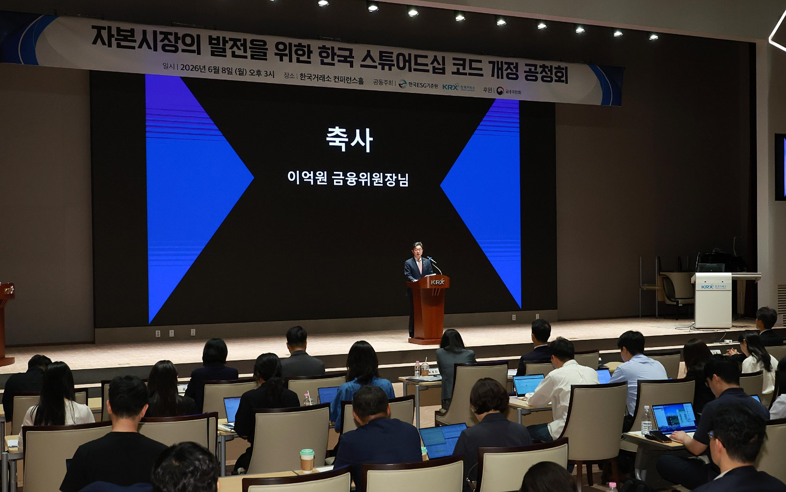
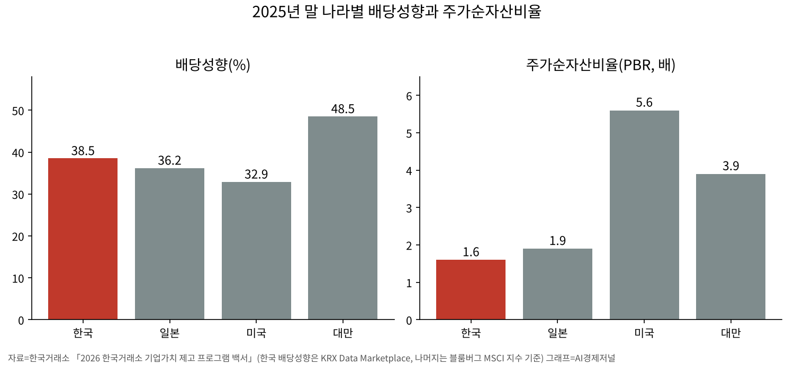

[경제밥상] 배당 48조원 시대의 밥상, 상위 1%에 몰린 숟가락
배당성향은 미국·일본을 넘었는데 주가순자산비율은 1.6배
배당소득 67.5%는 상위 1% 몫, 분리과세 최고세율은 30%
AI경제저널=김갑봉 편집국장 | 2026년 3월 6일 개정 상법이 공포와 함께 시행됐다. 회사가 사들인 자기주식은 1년 안에 소각하는 것이 원칙이 됐다. 이미 쥐고 있던 자사주에는 1년 6개월의 말미가 주어졌다. 자사주를 금고에 쌓아 두기 어려워졌다.

미국을 넘은 배당성향, 일본에 못 미친 주가순자산비율
숫자는 이미 크게 바뀌었다. 한국거래소가 5월 펴낸 『2026 한국거래소 기업가치 제고 프로그램 백서』를 보면 2025년 유가증권시장 현금배당 총액은 48조7000억원이다.
같은 해 자기주식 소각액은 21조4000억원이다. 새로 사들인 20조1000억원보다 많았다. 사들인 것보다 더 태웠다.
배당성향도 올랐다. 백서의 나라별 비교표(MSCI 지수 기준)를 보면 2025년 말 한국 배당성향은 38.5%다. 미국 32.9%, 일본 36.2%보다 높다. 대만은 48.5%다.
그런데 같은 표의 주가순자산비율(PBR)은 다른 말을 한다. 한국은 2024년 말 0.9배에서 한 해 만에 1.6배로 올랐다. 그래도 일본 1.9배, 신흥시장 평균 2.1배에 못 미친다. 미국은 5.6배다.

배당은 미국보다 많이 준다. 그런데도 값은 신흥시장 평균 아래다.
할인의 뿌리, 버는 힘과 주주를 가르는 지배구조
할인은 오래됐다. 자본시장연구원은 2025년 9월 보고서에서 2006~2024년 한국 증시 평균 PBR을 1.2배로 셌다. 선진국은 1.9배다. 같은 기간 주식시장 할인율은 한국 11.5%, 선진국 8.9%였다.
같은 연구원의 2023년 보고서는 2012~2021년 한국 상장사 주주환원율이 45개국 가운데 하위권이라고 분석했다. 할인을 가장 많이 설명한 것은 낮은 주주환원이었고, 수익성과 성장성 같은 재무 특성이 거의 같은 무게였다. 보고서는 취약한 지배구조도 원인으로 꼽았다.
한국은행은 2025년 3월 BOK 이슈노트에서 까닭을 짚었다. 지배구조와 규제가 주주 이익을 지키는 정도가 약하고, 유동주식 비중이 미국·영국보다 낮다는 것이다. 주주 보호가 약한 기업일수록 주주환원이 기업가치를 끌어올리는 힘이 컸다.
배당은 이제 미국과 일본만큼 준다. 그래도 값이 따라오지 않는다면 남은 숙제는 버는 힘과 지배구조다. 회사 돈의 쓰임을 정하는 자리에 소액주주는 없었다.
2025년 7월 22일 공포된 개정 상법이 이사의 충실의무 대상을 회사에서 회사와 주주로 넓힌 까닭이 여기 있다. 그 뒤를 이은 세 번째 개정이 자사주 소각 의무다.
상위 1%에 몰린 배당 몫
경제밥상은 몫을 묻는다. 늘어난 배당은 누구 밥상에 오르나. 차규근 국회의원은 2025년 7월 17일 국회 기자회견에서 2023년 귀속 주식 배당소득의 45.9%를 상위 0.1%가 받았다고 밝혔다.
참여연대 조세재정개혁센터가 2025년 11월 17일 낸 기자회견문을 보면 상위 1%로 넓힐 때 67.5%다. 배당 열 가운데 일곱 가까이가 1%의 몫이다.
배당세도 바뀌었다. 국회는 2025년 12월 2일 본회의에서 고배당기업 배당소득을 종합소득과 떼어 따로 과세하는 특례를 의결했다. 세율은 2000만원 이하 14%, 3억원 이하 20%, 50억원 이하 25%, 50억원 초과 30%다.
종합과세 최고세율은 45%다. 배당을 많이 받는 사람일수록 줄어드는 세금도 크다.
배당을 늘리라는 정책과 배당에 세금을 덜 매기는 정책이 한꺼번에 왔다. 두 정책이 만나는 자리에 상위 1%의 숟가락이 놓여 있다.
투자와 일하는 사람 몫까지 차린 밥상
한국은행 이슈노트는 경고도 달았다. 주주환원 확대가 생산적 투자를 위축시키지 않도록 해야 한다는 것이다. 빠르게 크는 산업에서는 투자로 수익성과 성장성을 높이는 편이 기업가치에 더 낫다고 했다.
설비투자 같은 자본적 지출은 주주 보호 수준과 상관없이 기업가치를 높였다. 밥상의 크기를 키우는 것은 배당이 아니라 투자라는 뜻이다.
주주환원은 옳은 방향이다. 지배주주와 소액주주가 같은 값을 받는 시장은 공정하다. 다만 밥상을 주주끼리만 나눌 일은 아니다.
배당세 혜택은 연금과 장기투자 계좌의 개미에게 먼저 가야 한다. 이익의 한 몫은 설비와 그 설비를 돌리는 사람의 임금으로 돌아가야 한다.
코스피 할인을 푸는 열쇠는 배당 총액이 아니다. 열매가 고루 돌아간다는 믿음이다. 그래야 지배주주와 소액주주, 일하는 사람이 같은 밥상에 앉는다.
참고문헌
- 한국거래소, 『2026 한국거래소 기업가치 제고 프로그램 백서』, 2026.5. https://kind.krx.co.kr/external/dst/valueupReference/11780/2026%20%ED%95%9C%EA%B5%AD%EA%B1%B0%EB%9E%98%EC%86%8C%20%EA%B8%B0%EC%97%85%EA%B0%80%EC%B9%98%20%EC%A0%9C%EA%B3%A0%20%ED%94%84%EB%A1%9C%EA%B7%B8%EB%9E%A8%20%EB%B0%B1%EC%84%9C.pdf
- 김선임·손달호, 「주주환원 정책이 기업가치에 미치는 영향」, BOK 이슈노트 제2025-5호, 한국은행, 2025.3.17. https://www.bok.or.kr/portal/bbs/P0002353/view.do?nttId=10090322&menuNo=200433
- 자본시장연구원, 「주식시장 할인율 국제 비교와 코리아 프리미엄 과제」, 이슈보고서 25-14, 2025.9. https://www.kcmi.re.kr/report/report_view?report_no=2170
- 김준석·강소현, 「코리아 디스카운트 원인 분석」, 자본시장연구원 이슈보고서 23-05, 2023.2. https://www.kcmi.re.kr/report/report_view?report_no=1522
- 국회예산정책처, 「2025년 개정세법 심의 결과 및 주요 내용」, 나보포커스 제129호, 2025.12.4. https://www.nabo.go.kr/board/file/down.do?fid=33318969
- 국가법령정보센터, 상법 제·개정이유(법률 제21448호 2026.3.6. 공포·시행, 법률 제20991호 2025.7.22. 공포). https://www.law.go.kr/LSW/lsRvsRsnListP.do?lsId=001702&chrClsCd=010202&lsRvsGubun=all
- 금융위원회, 「3차 상법 개정 취지에 맞추어 자기주식 보유·처분 공시도 강화됩니다」 보도자료, 2026.3.30. https://www.fsc.go.kr/no010101/86581
- 민주사회를 위한 변호사모임 등, 「야4당·노동시민사회, 배당소득 분리과세 법안 철회 촉구 기자회견」 공동보도자료, 2025.7.17. https://www.minbyun.or.kr/?p=64465
- 참여연대 조세재정개혁센터, 「국회는 상위 0.1%를 위한 「배당소득 분리과세」 도입 중단하라!」 기자회견문, 2025.11.17. https://peoplepower21.org/tax/2004490
[사진 출처]
- 사진 「자본시장의 발전을 위한 한국 스튜어드십 코드 개정 공청회 개최」(2026.6.9), 금융위원회 사진뉴스. 금융위원회 저작물(저작권법 제24조의2 자유이용, 출처 금융위원회). https://www.fsc.go.kr/no010106/87065
관련기사
- [정치밥상] 분열주의자들이 차린 밥상, 누구 몫이 올라가나
- [가계부채] 다시 늘어난 빚 6조4000억원과 0.61%포인트 오른 대출 이자
- 인천 경영안정자금 보증 3년 7849억원, 생산유발 1조4930억원 추정
- [재정 브리핑②] 국세 8월까지 69조원 더 걷혀, 내년 예산은 법인세 216조원에 기대
저작권자 © AI경제저널 무단전재 및 재배포, AI학습 및 활용 금지